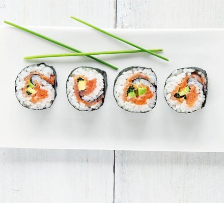

Salmon Avocado

Description
Fancy making salmon avocado sushi at home? This simple recipe makes 32 healthy little bites, ideal for lunch or served as canapés
Ingredients
- 300g sushi rice
- 2 tbsp rice or white wine vinegar
- 1 tsp caster sugar
- 1 large avocado
- Juice from 1/2 Lemon
- 4 sheets nori seaweed
- 4 large slices smoked salmon
- 1 bunch chives
- Soy Sauce
Steps
- Put the rice in a small pan with 600ml water. Bring to the boil and cook for 10 mins until the water is absorbed and the rice is tender. Stir through the vinegar and sugar, cover and cool.
- Skin, stone and slice the avocado. Put in a bowl and squeeze over the lemon juice, turning the avocado to ensure the pieces are covered.
- Divide the rice between the nori sheets and spread it out evenly, leaving a 1cm border at the top and bottom. Lay the salmon over the rice, followed by the chives and finally position the avocado across the centre.
- Fold the bottom edge of the seaweed over the filling, then roll it up firmly. Dampen the top border with a little water to help it seal the roll. Repeat to make 4 rolls. At this stage, the rolls can be wrapped individually in cling film and chilled until ready to serve.
- Using a serrated knife, cut each roll into 8 rounds. Serve with sweet soy sauce for dipping.
Home